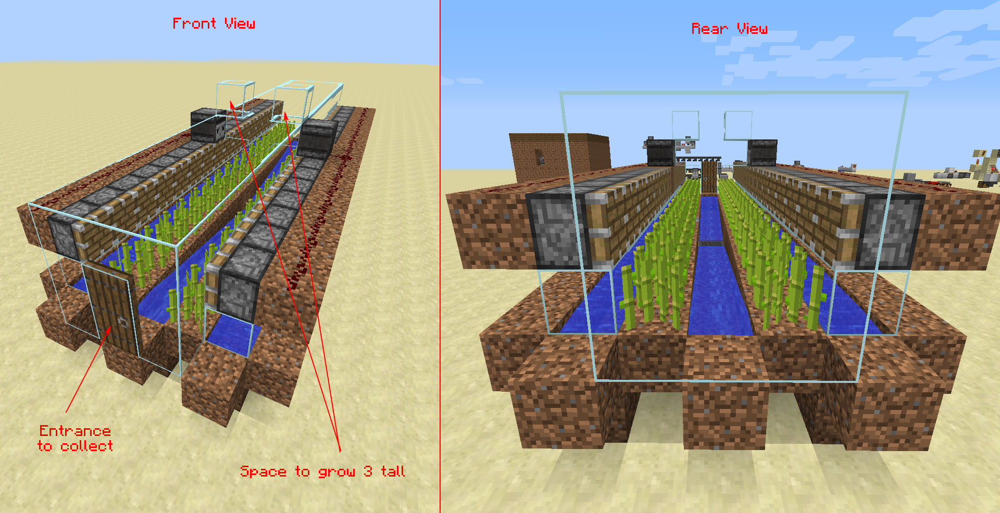

How to Build Automated Farms in Minecraft
By: Layla
Introduction
As players of Minecraft, we all know how satisfying it is to build structures and create our own virtual worlds. But have you ever thought about creating an automated farm in Minecraft? With the right tools and know-how, you can build a farm that is both efficient and effective, allowing you to focus on other aspects of the game, such as exploring or building.
Previous subheadings:
- Materials Needed for Automated Farms in Minecraft
- Choosing the Right Location to Build Your Automated Farm
- How to Design and Build an Automated Crop Farm in Minecraft
Building an automated farm in Minecraft can be a daunting task, but with the right information, you'll be harvesting crops in no time. Whether you're a seasoned player or new to the game, this guide will provide you with the necessary knowledge to build a fully automated farm that will save you time and energy.
Before we delve into the specifics of building an automated farm, it's important to understand the benefits of doing so. Not only will an automated farm save you time, but it will also increase your crop yields, giving you a surplus of resources to trade, craft, or sell. Additionally, it's a great way to learn the mechanics of redstone, a complex system of circuits that can be used to automate various tasks in Minecraft.
Whether you're looking for an easy-to-build farm that requires minimal resources or a more complex design that can be scaled up for larger yields, this guide has something for everyone. With step-by-step instructions and helpful tips, you'll be well on your way to building your own automated farm in Minecraft. So grab your pickaxe and let's get started!
ad space
What are Automated Farms in Minecraft?
If you're an avid Minecraft player, you know just how tedious it can be to manually farm crops and livestock. That's where automated farms come in. These efficient systems take care of everything from planting, harvesting, and breeding animals, leaving you with more time to explore, build, and craft in your virtual world.
To break it down, automated farms are mechanisms that use redstone and other player-made materials to automate farming tasks. They can range from simple setups like automated animal pens that feed and breed animals, to more complex farms that grow crops and produce food at a high production rate.
The benefits of using automated farms in Minecraft are numerous. For one, they allow players to save time and energy that would otherwise be spent manually farming. This makes it easier to sustain larger communities or construct grand structures without worrying about the mundane tasks of food production.
Automated farms also make it possible to produce rare or hard-to-find items with ease. For instance, with an automated mob grinder, players can reliably collect rare drops like Ender Pearls, Gunpowder, and even valuable Enchanted Books from enemy mobs.
Overall, automated farming in Minecraft is a great way to streamline your gameplay and boost your productivity. With a little creativity and the right resources, creating a fully functional automated farm in Minecraft is a fun and rewarding experience that can unleash your full potential as a Minecraft player.
ad space
Building Automated Farms
Minecraft is a game that allows players to create their own worlds, explore different environments, and engage in various activities. One of the most popular aspects of Minecraft is building farms that can be automated. With the right tools and techniques, players can create farms that provide resources like food, materials, and potions for their characters. In this article, we will explore the ins and outs of building automated farms in Minecraft.
Previous subheadings:
- How to Start Farming in Minecraft: Tips for Beginners
- Advanced Farming Techniques: Maximizing Your Harvest
- The Benefits of Building Automated Farms
Building Automated Farms:
Automated farms are very useful for players who want to maximize their resource gathering and minimize their manual labor. These farms are designed to be self-sufficient and require minimal input from the player. They rely on a range of tools and techniques, including redstone, hoppers, and dispensers, to create a fully functional farm that can grow crops, harvest them, and sort them into storage areas.
The first step in building an automated farm is to choose the crops you want to cultivate. Minecraft offers a wide variety of crops, including wheat, potatoes, carrots, and beetroot, each with their own unique properties. Once you have chosen your crop, you need to design the layout of your farm. This involves deciding on the size and shape of your farm, as well as the placement of your crops and any additional features like water or light sources.
Once you have your farm design in place, you need to connect it to a series of redstone circuits that will power the various automated mechanisms. The redstone circuits will control things like dispensers, hoppers, and pistons that move the crops along the various channels and into the storage areas. It's important to have a good understanding of how redstone works in Minecraft to build an effective automated farm.
In conclusion, building automated farms in Minecraft can be a challenging but rewarding task. With the right tools and techniques, you can create a self-sufficient farm that provides you with all the resources you need to thrive in the game. By following the tips we've outlined in this article, you can take your Minecraft farming to the next level and enjoy all the benefits of automation.
ad space
Designing Your Farms
Minecraft is a game that allows players to unleash their creativity, and one of the most popular activities is building automated farms. These farms can produce a reliable and steady supply of resources, making it easier to play the game and complete various objectives. In this article, we will explore everything you need to know about designing your farms in Minecraft.
When it comes to designing a farm, the first step is to determine what resources you want to produce. Different resources require different types of farms, and some resources are easier to automate than others. For example, a wheat farm is relatively straightforward to build, whereas a mob farm requires more planning and preparation.
Once you have decided what resources you want to produce, it's time to start planning your farm's layout. One of the most important things to consider is the spacing of your crops or animals. You'll want to make sure that they are close enough together to maximize your yields, but not so close that they start interfering with each other.
Another key consideration is the use of water and other irrigation systems. In Minecraft, water can help you hydrate your crops, and other items can be used to transport resources from one location to another. By incorporating these systems into your farm design, you can create an efficient and effective system that requires minimal input from you.
Ultimately, designing an automated farm is all about experimentation and trial-and-error. You may need to make adjustments as you go along, but with patience and perseverance, you can create a farm that meets your needs and helps you succeed in Minecraft. So, let your creativity run wild, and start designing your farms today!
ad space
Benefits of Automated Farms
Minecraft is a game that allows players to exercise their creativity in building virtual worlds. One of the most popular activities is to create automated farms, which can produce crops and resources with minimal manual input. Automating farms in Minecraft has become increasingly relevant with the game's popularity, with more and more players seeking information on how to build automated farms to save time and effort.
In this article, we'll discuss the benefits of automated farms in Minecraft. By exploring the perks of automating crop production and resource gathering, we can show why building automated farms can be a game-changer for players.
One of the main benefits of automated farms is increased efficiency. With automated farms, players can save time and energy in cultivating their crops and resources. Automation also eliminates the need for manual labor, so players can focus their attention on other activities in the game.
Another advantage of automated farms is the ability to produce a large amount of crops or resources. Automated farms can produce goods at a much faster rate than manual farming, which means players can stockpile large quantities of resources for future use.
Automated farms also have the potential to improve overall gameplay by providing a constant source of resources. Players no longer have to worry about running low on food or essential resources, allowing them to spend more time exploring and building in the game.
In conclusion, building an automated farm in Minecraft has many benefits, from increased efficiency to a constant source of resources. By automating farm tasks, players can save time and energy while enjoying an enhanced gameplay experience. With the potential for increased productivity and efficiency, building an automated farm is a smart move for any Minecraft player.
ad space
Conclusion
As you conclude your journey to building automated farms in Minecraft, you have likely learned that it takes a combination of creativity, perseverance, and patience to achieve success in this unique endeavor. You have not only gained an understanding of the many intricate mechanics that make farming possible in-game, but also honed your problem-solving skills and technical prowess.
Building automated farms in Minecraft can be a challenging process, but the rewards are well worth the effort. Not only do automated farms provide food and resources for your character, but they also serve as a testament to your ingenuity and dedication as a player. Whether you are a seasoned Minecraft veteran or a newcomer to the game, building automated farms is an exciting and rewarding experience that is unlike any other.
As you continue your Minecraft journey, we hope that you feel inspired to embrace the endless possibilities that this game has to offer. Whether you choose to build towering structures, explore vast caverns, or create awe-inspiring redstone machines, Minecraft is a game that will continue to challenge and captivate you for years to come. Remember, the possibilities are truly limitless - all you have to do is let your imagination run wild.
In conclusion, building automated farms in Minecraft is an incredible undertaking that requires time, effort, and determination. But the end result is a beautiful farm that will sustain you throughout your journey in this expansive and immersive game. So put on your thinking cap, get creative, and start building - the world of Minecraft awaits!
ad space